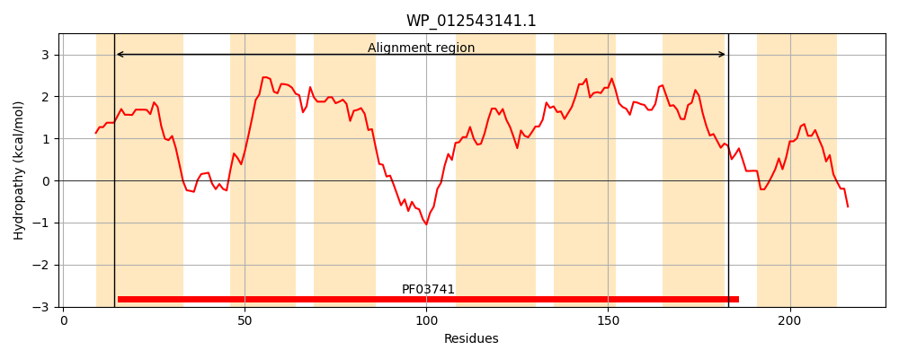
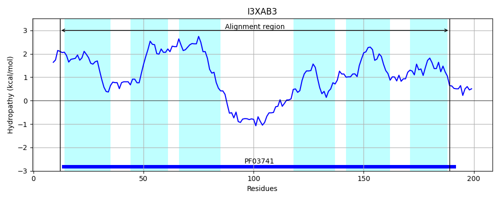
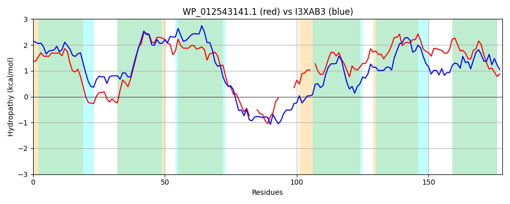

Hit Accession: I3XAB3
Hit TCID: 2.A.109.1.5
Hit Description: gnl|BL_ORD_ID|5307 gnl|TC-DB|I3XAB3|2.A.109.1.5 Putative TerC family transmembrane efflux protein OS=Sinorhizobium fredii USDA 257 GN=USDA257_c42800 PE=4 SV=1
Mach Len: 178
e:0.000000
Query TMS Count : 7
Hit TMS Count: 6
TMS-Overlap Score: 4.450000
Predicted Substrates:CHEBI:30452;tellurium atom
BLAST Alignment:
Score: 275 , Bit scores: 110 bits, E-value: 4.4e-30, Alignment length: 178, Percentage identity: 37
Query: 14 MLQIVAIDLLLGGDNAVVIAMACRKLPPQKRTKAIIIGTVGAILARVLLLALALYLLSLPWLKIVGALLLLWIGMKLVSNEEE--ESEVGSSAS-----LWRTAIT-ITVADVIMSLDNVLAVAAAGKGHIALVALGVAISIPIIVAGSKLVLVLLTRFPAVVLLGGMLIGWIAGSML 183
++Q++ IDL+L GDNAVVI +A LP ++R KAI++G + A + R++L A + LL++ L + G +LLLW+ K+ EVG A+ +R A T I VADV MSLDNVLAVA A + H ++ G+ +SI ++ + + LL R+ + +G +I +++ M+
Sbjct: 12 LMQVIVIDLVLAGDNAVVIGLAAAGLPIEQRKKAILVGIIAATVLRIVLAAFTVQLLAIIGLLLAGGILLLWVCWKMWREIRSGGHEEVGLDAANAPKKTFRQAATQIVVADVSMSLDNVLAVAGAAREHPTVLVFGLMLSIAMMGIAASFIARLLARYHWIAYVGLAIILYVSIDMI 189 | Protein Hydropathy Plots: |
|---|
|  |  |
Pairwise Alignment-Hydropathy Plot:
|
|---|
|  |